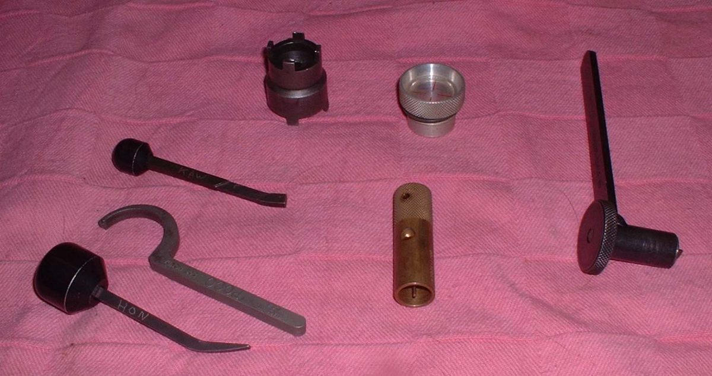
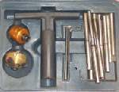
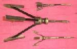
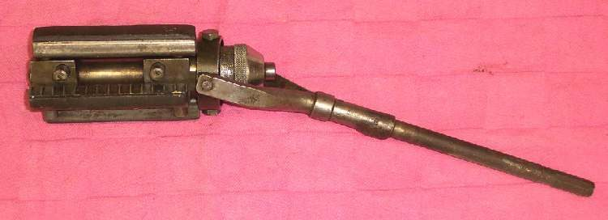
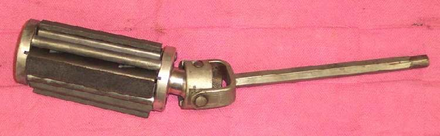
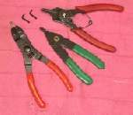

Some jobs need a tool made for one task. A flywheel puller, a clutch nut tool and a bearing driver are common examples. Before a job, decide whether the tool is needed, how to get it, and whether a substitute is safe.
Safety
- A wrong substitute can crack a flywheel, bend a shaft or wreck a bearing. A broken part costs more than the tool.
- Do not use a general puller on a part the manual says needs its own puller.
You need
- Your bike's workshop manual (it names the special tools).
- A list of the jobs you plan to do.
Steps
- Read the job steps first. Note every tool the manual names, and which steps cannot be done without it.
- Sort each tool into one of three groups: - Fits one procedure on one engine or frame only (for example a clutch nut socket with a special thread). - Fits one procedure on several models from one maker (for example most flywheel pullers). - Fits one procedure on many makes (for example a piston pin puller).
- Group 3 is worth buying: it will work on many bikes. Group 2 can be shared. Group 1 is best borrowed or hired, or made.
- Ask other mechanics, a bike club or a nearby workshop to lend or hire the tool.
- Buy a general tool if you will use it often. Cheaper copies often work if they fit properly.
- If the job cannot wait and the tool cannot be had, consider making one: Make a simple special tool.
- Do not force a substitute. If the part does not move under normal force with the right tool, stop and re-read the steps: heat, a missed bolt or a locking pin may be the cause.
- Before you start, check that the tool fits the part and covers all the threads or flats it needs.
Check your work
- The tool fits the part with no gaps, and the force goes through the part it is meant to hold.
- The part came off or went on without damage.
If it did not fix the problem
- No tool and no way to make one: take the part to a workshop that has it.